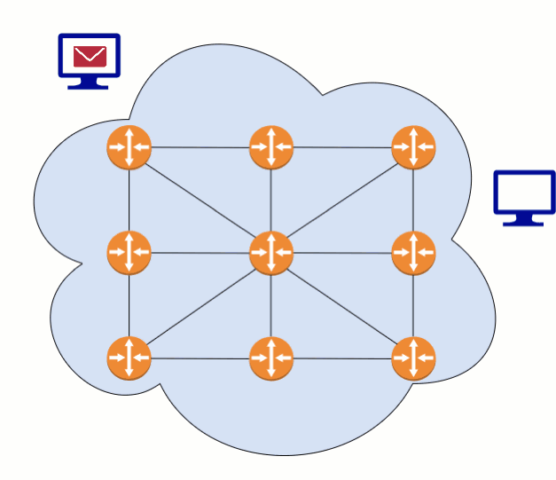
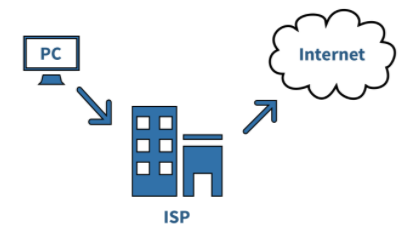
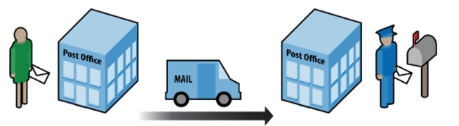

Lesson 4 - Routers
At the end of this lesson, you will be able to:
- Explain how information travels over the internet through different computers called routers.
Routers
A router is a computer with one job: passing information from one network to another. When a packet arrives, the router either delivers it to its final destination or hands it off to one of the several other routers it's connected to. And because routers keep an eye on current network conditions, they can pick whichever hand-off will get the packet where it's going fastest.
In figure 2.6, the routers are the orange circles - watch how information hops from router to router to travel from one computer on the internet to another.

There are usually several paths between any two locations on the Internet, so if one path is jammed with traffic or out of service entirely, your packets just take another. This redundancy makes the Internet more reliable, and it helps the Internet scale too - new users (and routers!) can join the system without anything grinding to a halt.
Bandwidth
Routing is the process of finding a path from the sender to the receiver. As we have seen, there are many different paths a message might take.
How fast that message arrives comes down to bandwidth: the maximum amount of data that can be sent in a fixed amount of time, usually measured in bits per second. If a message arrives quickly, high bandwidth is probably why - lots of bits per second. If it crawls, low bandwidth is the likely culprit.
Internet service providers (ISP)
Your computer probably connects through a router sitting somewhere in your home, which links you to your ISP. ISPs (Internet Service Providers) are the companies that sell Internet access to homes and institutions (Xfinity, CenturyLink, Astound, &c.). Here's the thing, though: the computers connected to the Internet, and the connections among them, don't belong to any one organization.

One way to picture your ISP: it's the US Post Office (USPS). You drop your letter at your local post office, it gets forwarded through other distribution centers, and it finally lands at the post office closest to wherever the letter is headed. Those distribution centers? Routers.

And just like mail through the USPS, information sent over the internet needs a To: and a From: address. In the next lesson we'll meet protocols - including the Internet Protocol, which handles exactly that addressing job for senders and receivers of information.